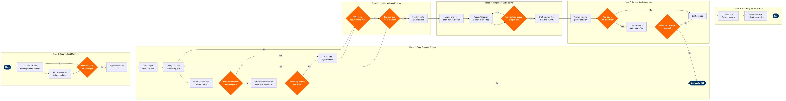

| Step | L4 Step Name | KPI / Target | Pain Point / Risk | Gate |
|---|---|---|---|---|
| 1.1 | Compute reserve coverage requirements by base | Reserve callout success rate ≥95% within 60 min; reserve buffer ≥110% of forecast open duties | Historical sick-call rates underestimate demand during seasonal IROPS surges; model recalibration requires manual analyst intervention — no auto-refresh in Jeppesen planning module | |
| 1.2 | Allocate reserve positions per CBA obligations | CBA compliance rate 100%; reserve allocation published ≥72 hours before period start | CBA restrictions on reserve obligation days limit scheduling flexibility; union grievances filed when allocation violates contractual reserve windows or exceeds maximum days-on-call | |
| 1.3 | Validate reserve pool adequacy vs. coverage model | Reserve pool adequacy score ≥90% across all bases; gap closure within 48 hours of identification | Coverage model accuracy degrades during network-wide weather events; no predictive depletion forecast natively in Jeppesen — requires manual scenario modelling in spreadsheets | ⚠ |
| 2.1 | Detect open crew position from absence or IROPS | Open duty detection latency ≤10 min from absence notification; 100% of open duties logged before T-90 min departure | Sick-call surges during IROPS overwhelm scheduler capacity; legacy Jeppesen alert queues do not auto-triage by urgency, forcing manual prioritisation under time pressure | |
| 2.2 | Query available reserve crew by qualification match | Query response time ≤2 min; shortlist generated for 100% of open duties before callout initiation | Jeppesen does not automatically apply all CBA tie-breaker rules in the sort order; schedulers manually override, introducing errors and exposing airline to union grievances | |
| 2.3 | Initiate automated reserve callout sequence | Reserve answer rate ≥85% within 30 min of first callout; callout-to-assignment cycle ≤45 min | Crew unreachable on personal phones during off-duty sleep periods; no regulatory mandate requiring reserve crew to answer within a defined window in all jurisdictions, creating unpredictable response latency | ⚠ |
| 2.4 | Escalate to secondary reserve or open-time board | Secondary escalation resolution ≤45 min; open-time fill rate ≥70% within 60 min of posting | Reserve pool exhaustion during cascading IROPS requires manager authorisation to use voluntary overtime; CBA overtime budgets frequently exhausted mid-event, forcing flight cancellations | ⚠ |
| 3.1 | Validate FAR Part 117 rest requirements | Legality check completion ≤1 min per crew member; 0 illegal pairings assigned per month | Rest period calculations for reserve crews differ from lineholder rules under FAR 117; system may not correctly flag cumulative fatigue across split reserve periods (FAR 117.25), requiring manual secondary checks | ⚠ |
| 3.2 | Verify aircraft type currency and recency | Zero misassignment events due to lapsed currency; qualification check latency ≤1 min | Currency lapses during extended reserve periods not proactively surfaced; recency tracking in Jeppesen relies on accurate and timely training record feeds from the LMS — data latency causes stale qualification status | ⚠ |
| 3.3 | Confirm route-specific qualifications (ETOPS/special airports) | Zero ETOPS qualification violations; 100% route compliance rate | ETOPS qualification status not always current in crew tracking system due to training record feed delays; manual cross-check with training department adds 10–15 min to assignment cycle | |
| 4.1 | Assign reserve crew to open duty in system | Assignment completion ≤5 min from legality confirmation; roster visibility propagated to all systems ≤2 min post-assignment | Simultaneous assignment attempts by multiple schedulers during IROPS cause optimistic locking conflicts in Jeppesen; failed writes require manual retry, adding delay during time-critical coverage windows | |
| 4.2 | Notify reserve crew via mobile push notification | Notification delivery ≤2 min of assignment; crew acknowledgment receipt rate ≥92% within 15 min | Notification failures when crew device is offline or app version is outdated; no guaranteed delivery SLA from mobile OS push services (APNs/FCM) — silent failures require fallback SMS or phone call | ⚠ |
| 4.3 | Brief crew on flight plan, NOTAMs, and special conditions | Briefing completion ≥30 min prior to departure for 100% of reserve activations; zero regulatory briefing compliance failures | Reserve crew unfamiliar with last-minute route changes or unfamiliar destination airports; time pressure in IROPS degrades briefing thoroughness, increasing risk of operating with incomplete situational awareness | |
| 5.1 | Monitor reserve pool utilization in real time | Alert triggered when available reserves ≤20% of pool; dashboard refresh interval ≤5 min | Dashboard refresh latency during high-volume IROPS masks true pool depletion until critically low; Jeppesen base module lacks predictive depletion forecast — operational awareness depends on manual monitoring | ⚠ |
| 5.2 | Post voluntary extension offer to open-time board | Voluntary coverage fill rate ≥70% within 60 min of posting; overtime authorisation cycle ≤15 min | CBA limits on forced extensions restrict scheduler options during IROPS; voluntary overtime budget frequently exhausted during prolonged disruptions, leaving residual open duties uncovered | ⚠ |
| 5.3 | Escalate unresolved open duties to NOC for cancellation decision | Escalation-to-decision cycle ≤30 min; cancellation decision communicated to all stakeholders ≤10 min post-decision | NOC cancellation decisions during cascading IROPS require simultaneous crew, aircraft, and gate inputs — single-system views in SITA AMS delay decision quality; lack of integrated crew-aircraft-gate dashboard extends resolution time | ⚠ |
| 6.1 | Update FTL and fatigue counters post-reserve duty | FTL record update SLA ≤4 hours post-duty completion; 100% record accuracy verified by audit | Late inbound flight data delays FTL record updates; accumulated entry errors trigger false legality alerts in the next scheduling cycle, blocking legal crew assignments and requiring manual override | |
| 6.2 | Analyse reserve utilisation metrics for planning feedback | Monthly report delivered within 5 business days of period close; callout success rate trend ≥95%; report consumed in next planning cycle within 30 days | Analytics data latency from Jeppesen to the data warehouse (AWS Redshift) averages 6–12 hours; IROPS events skew utilisation metrics and must be manually isolated from baseline planning to avoid over-provisioning reserve pools |